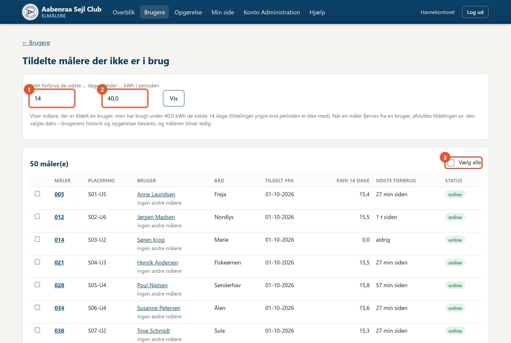

1Tildel en måler til en båd

Gå til Overblik → klik på målernummeret (eller søg på stander/udtag, fx S12-U3).
- Vælg et eksisterende medlem …
- … eller skriv e-mail og navn på et nyt.
- Startdato – forbrug tælles fra kl. 00:00.
- Tildel måler. En tidligere tildeling afsluttes automatisk pr. samme dato.
- Fjern fra bruger pr. en dato, når båden forlader pladsen.
- Skriv/ret bådens navn – den følger med i afregningen.
2Opret et medlem
- Brugere → Opret bruger: e-mail, navn, telefon – og evt. måler og båd med det samme.
- Sæt flueben ved Send invitation. Medlemmet vælger selv adgangskode via linket (gyldigt i 14 dage).
- Mange på én gang: Importér fra CSV (
maalerog/elleremail). - Flueben i listen → Send invitation eller Skriv besked til de valgte.
Flere både? Tildel én måler pr. båd til samme medlem. Hver båd afregnes for sig.
3Hjælp et medlem
- Brugere → søg → klik på navnet.
- Kan ikke logge ind: Send nulstil-link eller Send invitation – eller sæt en adgangskode direkte.
- Forkert e-mail: ret den under Oplysninger.
- Ser ikke sin båd: tjek at måleren er tildelt med den rigtige startdato.
- Måler offline: stik eller strøm på standeren – tjek Overblik.
4Ryd op: målere der ikke er i brug

- Antal dage uden forbrug …
- … og grænse i kWh.
- Vælg alle – eller enkelte målere.
- Fjern valgte pr. en dato. Historik og opgørelser bevares.